Example
Prerequisites
Inducing Operators
Testing
Problems
The opmaker tool in the current version of GIPO is capable
of generating operators for non-hierarchical domains.
As an illustrative example we describe the Hiking Domain, a new planning domain with documentation and description on the GIPO resource page.
Two people (hikers) want to walk together a long clockwise circular route (over several days) around the Lake District of NW England. They do one ``leg" each day, as they get tired and have to sleep in their tent to recover for the next leg. Their equipment is heavy, so they have two cars which can be used to carry their tent and themselves to the start/end of a leg.
We assume that we have been constructing our domain model and have reached the stage where we have a partial model with a valid sort tree, predicate definitions and substate definitions. In addition to run opmaker the user must specify, using the task editor, a well understood problem in the domain. A task specification allocates an initial state to every object in the problem and the desired state of a subset of these object as the goal state to be achieved.
The domain definition is shown below using snapshots from the GIPO environment.
First the defined sort and object tree for the domain:
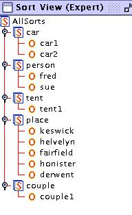
The predicates defined for the domain are:
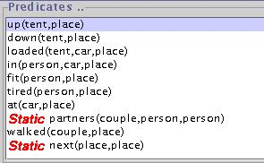
The states defined for the dynamic sorts are:
for car - at(Car,Place) [1 state]
for person - tired(Person,Place) or
fit(Person,Place)
or in(Person,Car,Place)
[3 states]
for tent - up(Tent,Place) or down(Tent,Place)
or
loaded(Tent,Car,Place) [3 States]
for couple - walked(Couple,Place) & partners(Couple,Person1,Person2)
& ne(Person1,Person2) [1 state]
In addition there are static predicates, that is predicates that are
always true, at least in the planning process. These are defined in the
Atomic Invariants Editor
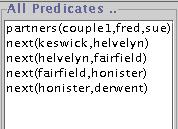
The final part of the domain that must be defined prior to using
Opmaker is at least one problem. Defined in the Task Editor
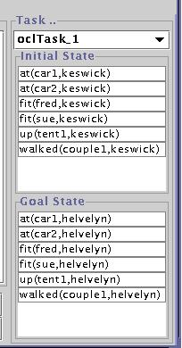
This task represents one leg of the tour. The couple have started
in Keswick with the tent up and they are rested and fit. At the beginning
of the next day they must be in the same state but at Helvelyn which is
next on the tour to Keswick.
First the action name is entered, then the user drags the objects effected by this action on to the predicate/action tree at the right of the Opmaker window. For example the first action of the day may be to take the tent down so we enter the name tent_down and press new, then we need to drag the objects involved on to the action tree. In our example the tent can be taken down by one person so we drag fred, tent1, and keswick. (We need the place Keswick, because in the defined predicates we always keep track of where everything is.) We can now continue in this way until we have a complete sequence of actions for our task or we may decide to generate the the actions incrementally, but remember and commit after generation operators unless something has gone wrong. In the example shown in the Opmaker window below we have entered a complete sequence for the first leg of the walk.
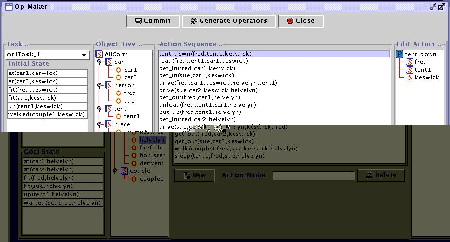
When objects are dragged on to the action definition/tree the order of the arguments is important in two respects. First if an action is repeated such as get_in in the hiking sequence the order of object sorts must be the same in all occurrences. We should mentally associate a sentence such "Fred gets in to car1 in Keswick" with the action description, then any use of get_in must fit the same sentence pattern. Secondly in some actions such as the drive action there are some elements of the action that must always be present such as the driver, the car, and the to and from locations, but there may be other things optionally involved such as the tent in the first occurrence of drive in the above sequence and fred in the drive action that brings both sue and fred back to Keswick. In the drive action these are the things that may or may not be carried/passengers on the trip. These things that "conditionally" change in an action should appear in the current version of Opmaker at the end of the object list, though otherwise their order is not important, nor is it required that these things that optionally are involved must always be presented in the same order.
Note: that in practice we would recommend that you initially use Op Maker with much shorter lists of actions than illustrated above in the hiking domain. The definitions can be built up incrementally. If you commit the operators afrter inducing some sucessfully these operators will be used in later sequences along with the descriptions of new action to be induced.
Once the action sequence has been defined press the Generate Operators
button which will start a question answer dialogue to clarify what happens
to the mentioned objects when the action is performed.
For the above sequence the first popup dialog box is shown below:
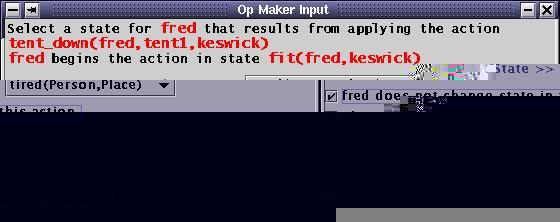
Here we are being asked if fred changes to one of
the other defined states for sort "person" as a result of taking the tent
down. The possible resulting states are in the drop down combo box. We
are told what state fred is in when the action starts. Fred
however remains in state "fit in keswick" so we have ticked the check box
indicating that fred does not change state then we press OK.
The next question relates to the tent:
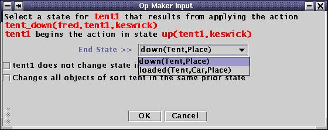
This time we choose the down state and press OK. The dialogue with
the user continues in this way whenever Opmaker cannot determine the resulting
state by itself. The next interesting part of the dialogue occurs during
dealing with the first drive action where to clarify the resulting state
of fred a dialog box is presented asking the user to choose the resulting
location for fred, only places mentioned in the action are presented.
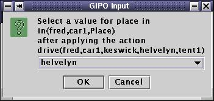
After answering this question Opmaker detects that helvelyn
is next to keswick in the list of static predicates hence
opmaker asks if this is a requirement before every application of the drive
action occurs. In this case it is not fred could drive to any of the locations.
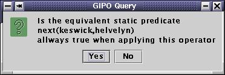
We are not yet finished with the drive action we are next queried
about the tent
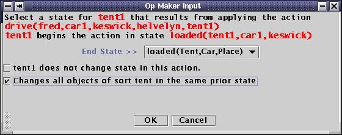
Here we choose that the tent is still in the loaded state but this
will be a new state as the Place value will change, but this time the tent
is one of the things that only optionally change state when the drive operation
takes place, hence we check the second check box. This indicates that any
(and any number of tents) loaded in the car at keswick would make the same
change.
The next interesting part of the dialogue occurs when Opmaker tries
to figure out what is happening on the drive action for returning both
sue and fred to keswick: (3rd application of drive)
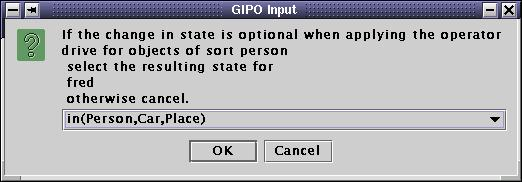
Opmaker can accommodate a change to fred's state only if it is correct
that this is an optional change of state which it is. We therefore select
the in(Person,Car,Place) state and press OK. In this situation Opmaker
will revise the definition of "drive" previously deduced and add a new
conditional transition.
All that is left is to follow the dialogue through to the end in a similar manner and then commit the resulting definitions. Note we cannot look at the deduced operators without committing them first.
To test our deduced operators we can now try the stepper or preferably try a planner. If we have an external planner integrated into GIPO we can use that.
Here are our results using FF
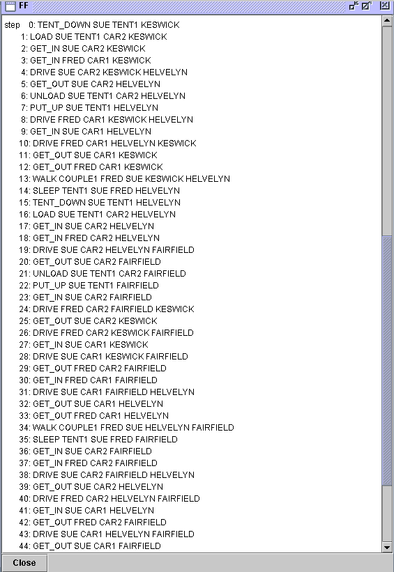
Note: The most common reason for Op
Maker to fail to induce an operator definition is that you have failed
to provide initial values of all the variables referenced in the state
descriptions of dynamic objects referenced in the action sentence provided.
For example to define the get_out action the primary objects
involved in the action are the car and the person but the precondition
of getting out of the car is that the person is in the state described
by the predicate in(Person,Car,Place) therefore to be able
to use this prior states values must be provided for both the car and the
place even though the place will not change as a result of the person getting
out of the car. An example would be get_out(fred,car1,helvelyn).
Back To Top